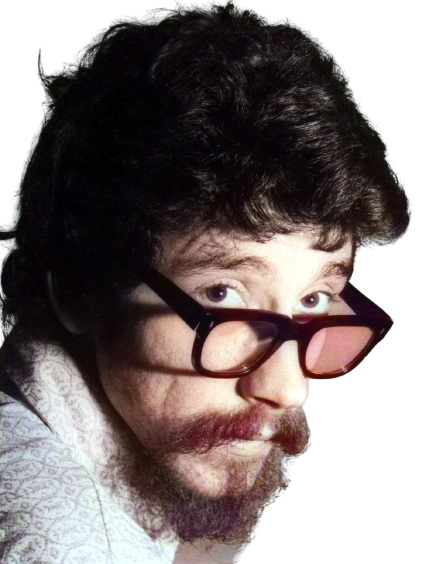

1 / 3

Raul Seixas
2 / 3

Discos 24
3 / 3

Frase
❮
❯
Raul Seixas (1945-1989) foi um cantor, compositor, guitarrista e produtor brasileiro, um dos mais importantes nomes do rock no Brasil.
Entre suas músicas destacam-se: Maluco Beleza, Eu Nasci Há 10 Mil Anos Atrás, Mosca na Sopa e Ouro de Tolo.
Raul Santos Seixas nasceu em Salvador, Bahia, no dia 28 de junho de 1945.
Era filho de Raul Varela Seixas, engenheiro de estradas de ferro, e de Maria Eugênia Santos Seixas.
Com sete anos iniciou no curso primário. Em 1957 ingressou no Colégio São Bento, mas foi reprovado
na 2ª série por três anos. Foi então mandado para o curso interno do Colégio Marista, mas só completou a 3ª série.
Raul gostava de ler os livros da biblioteca de seu pai e criva suas próprias histórias desenhando os
personagens nos cadernos da escola. Gostava de música, mas seu sonho era ser escritor.
Na adolescência ele ficava horas ouvindo as músicas de Elvis Presley e de
Little Richard. Em 1959, junto com o amigo Waldir Serrão, fundou o fã clube “Elvis Rock Club”.
